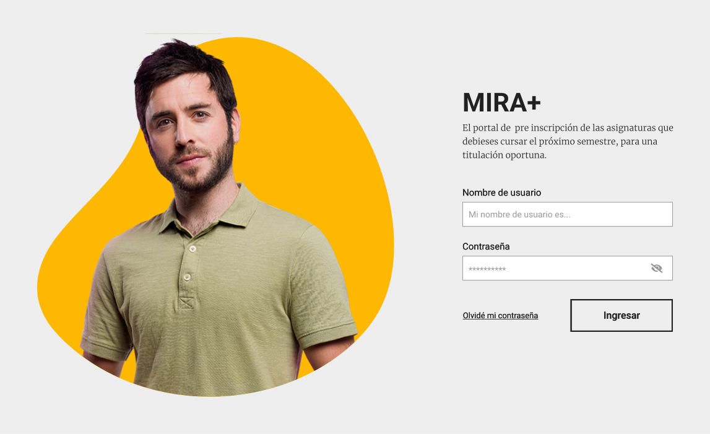
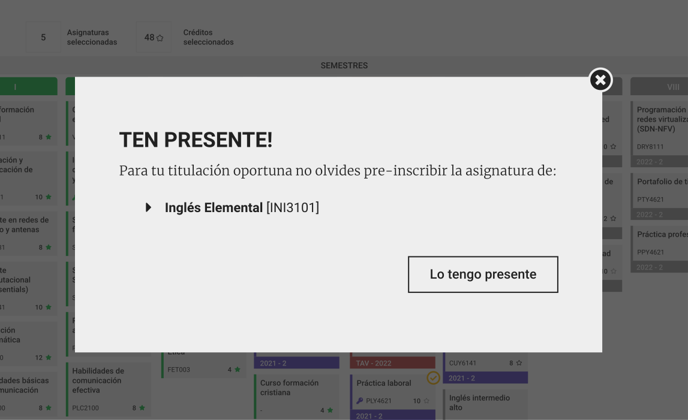
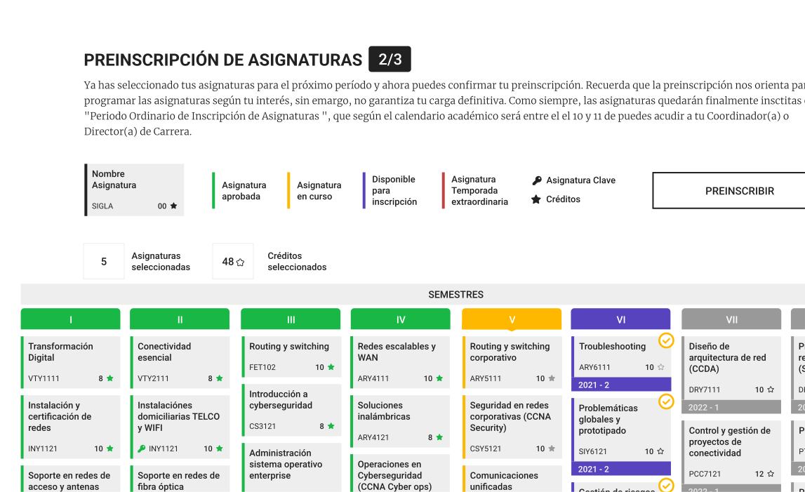
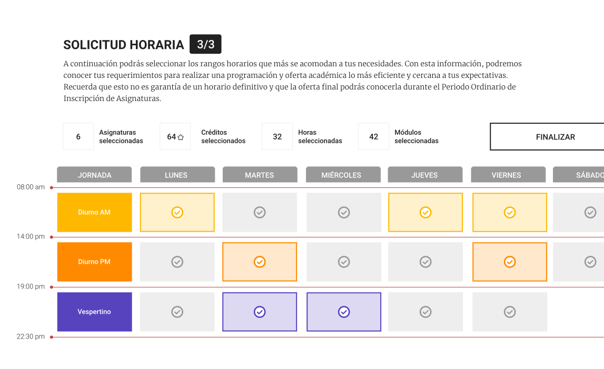

Mira+
Diseño de interfaz · Handoff · Frontend (CSS) · 2021Contexto
Cuando te piden ayuda porque tú enseñas lo que ahora te toca hacer
Paola Araya, Subdirectora Académica de la Sede Viña del Mar, solicitó a la Escuela de Diseño un equipo docente que apoyara el diseño UX/UI y frontend de Mira+, la plataforma de pre-inscripción de asignaturas de Duoc UC. El problema era concreto: la inscripción en línea presentaba fricciones de usabilidad que afectaban la titulación oportuna de los estudiantes. Lo que estaba en juego no era solo el proyecto. Era la confianza depositada en nosotros como representantes del área digital de la misma escuela donde enseñamos ese trabajo.

El Reto
Traducir una malla curricular en una decisión en tres pasos
En lugar de inventar una metáfora visual nueva, tomé la estructura base de la malla curricular de la carrera —algo con lo que todo estudiante ya está familiarizado— y construí sobre ella un sistema cromático: verde para asignaturas aprobadas, amarillo para en curso, gris para disponibles, violeta para seleccionadas y un tono crimson para temporada extraordinaria, más iconografía de llave para asignaturas clave y estrella para créditos. La meta era que, en tres pasos simples, cualquier estudiante entendiera su progresión curricular sin necesidad de instrucciones.
Trabajé junto a Paola Veliz, diseñadora frontend, y Nicolás Espinoza, diseñador gráfico y especialista en arquitectura de la información. Mi rol fue el diseño de interfaz alineado a los códigos gráficos institucionales, con handoff directo a frontend. El plazo era corto —trabajé fines de semana para llegar a tiempo— y la única razón de que funcionara fue la coordinación estrecha con el equipo.

LOGIN
Pantalla de inicio de sesión

MODAL
Mensajes que sugieren acciones al estudiante

PREINSCRIPCIÓN
Al seleccionar sus asignaturas, el estudiante puede solicitar preinscripción.

HORARIO
El estudiante puede solicitar una franja horaria para sus clases
Roboto bold
Roboto medium
Roboto regular
Merriweather light
| Nombre | Font | Weight | Size | Line height |
|---|---|---|---|---|
| Titular 1 | Roboto | Bold | 42px | 50px |
| Titular 2 | Roboto | Bold | 24px | 32px |
| Titular 3 | Roboto | Bold | 14px | 22px |
| Eyebrow | Roboto | Medium | 13px | 21px |
| Párrafo | Merriweather | Light | 15px | 23px |
| Small bold | Roboto | Bold | 12px | 20px |
| Small regular | Roboto | Regular | 12px | 20px |
DECISIONES DE DISEÑO
Una guía de estilos como puente hacia el desarrollo
Entregué mockups y una guía de estilos con colores, tipografías, tamaños, espacios y estados de componentes definidos con precisión, para que el equipo de frontend construyera sin ambigüedad. El trabajo se prototipó en Figma, y además participé directamente de ajustes CSS a través de una rama propia en GitHub — un paso más cerca de la implementación que en mis otros proyectos.
RESULTADOS
Un piloto que la sede completa celebró como un éxito
Como en el resto de los proyectos vía Startup Motion, entregué wireframes, mockups y una guía de estilos con códigos de color, tipografía, espaciados y estados de componentes exactos, para que el desarrollador construyera sin ambigüedad. Prototipado en Figma, implementado en WordPress con Divi.
APRENDIZAJES
Diseñar para tu propia institución es un examen de idoneidad, no solo de oficio
Cuando el encargo viene de la misma institución donde enseñas lo que estás a punto de hacer, el estándar sube: no basta con resolver el problema de usabilidad, hay que demostrar que lo que enseñas en la sala de clases es exactamente lo que sabes hacer en la práctica.